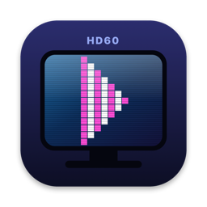

Projects.
Things I've built, mostly to scratch an itch
Home
Web app and home server · Private · November 2026
One app for the whole house: the heat pump, air conditioners, lights, battery, car, appliances and cat flap, with what the heating really costs once the solar panels and battery are counted.
Read more →InterLude
macOS app and Linux server · Open source · October 2026
Plays BBC radio to my Mac, a browser, or Chromecast and Sonos speakers and quietly mutes the news bulletins, or cuts them out of programmes from the last 30 days. Runs as a menu bar app or on a Linux server, with a remote for your phone.
Read more →
HD60 Pro for macOS
macOS driver and app · October 2026
A DriverKit driver and player that make Elgato's HD60 Pro capture card work on Apple Silicon Macs, a card Elgato never wrote a Mac driver for.
Read more →